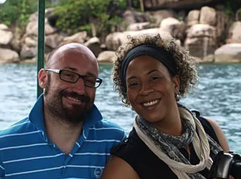

Travel Testimonials
Comments & Customer Reviews
Tanja and Etienne, Switzerland - November 2018
2 amazing weeks with Alan in Malawi: First we spent 1 week at Lake Malawi. The fantastic beach in the pretty Makuzi Beach Lodge reminded us of the Seychelles with its white sand and granite rocks. Then followed the incomparable eco lodge Mumbo Island with only 5 rooms. You will never be closer to nature again! Several breeding sea eagles, the local otters, countless birds and a colourful underwater world leave unforgettable memories. And: There were no crocodiles J Afterwards we went on safari to the Mvuu Lodge. With the help of Alan and our great ranger Chifundo we could discover everything from elephants to eagles, black mambas, cheetahs and lions. The absolute highlight were 2 hours spent in a shelter close to a waterhole with only a couple of meters between us and a group of elephants. We would not want to visit this marvellous country again without Alan as our guide.
Fiona and Winnie Jurk, Scotland - November, 2018
On this, our second trip with Alan, we set him a hard challenge - to equal our first shared adventure at the end of 2016. In the event, he surpassed all our expectations yet again. We had such wonderful memories of our stay at Mvuu Camp first time around, that we wanted to return there. This time we were able to drive through, and so approached the camp from the other river bank. Alan had pre-organised some very special surprises for us out with the agreed programme - a morning spent at a waterhole hide with memorable close-up encounters with families of elephants as well as a multitude of other animals come to drink, a sundowner excursion to a magnificent old baobab on the river bank, a picnic breakfast which culminated with a lengthy sighting of a cheetah family. Alan clearly has a great rapport with guides at all the camps he frequents, and that shows in their willingness to go the extra mile for him - and for us as his guests. We had an “animal-packed” three days at Mvuu, before Alan drove us up to Lilongwe where we overnighted before the second half of our stay. We were very keen to explore Zambia, and because of our time constraints, Alan suggested we focus on South Luangwa National Park. On our first drive out from the camp, we met six individual lions, and that trend continued throughout our stay, our favourites being two elderly gentlemen Ginger and Garlic, so called because of their colouring Our stay at South Luangwa culminated in impressive viewings of leopard, but we also watched elephant and giraffe crossing the river Luangwa which was severely depleted in depth because of drought. We were also fortunate enough to admire breeding carmel bee-eaters on the steep river banks, and again encountered a range of exotic and wonderful wildlife. One of the many things we appreciate about being in Alan’s company is his willingness to enthuse about all flora and fauna, and we spent many happy hours sitting discussing unfamiliar birds and trees. Every outing we learnt and/or saw something new and exciting, and were not confined to the Big Five. (We also heard about the Small Five, the Ugly Five, and a number of other Fives). Aware of the potential delays at border crossing points between Malawi and Zambia, Alan had arranged to fasttrack through the formalities with the help of a colleague. It is this attention to detail, along with his pleasant personality and calm manner, which makes travelling so much more enjoyable. He is flexible and his organisational skills are superb - he took note of a comment about my current back problem, and made sure I was comfortable at all times, without making any fuss. He also arranged a change in drivers to ensure that our final game drive was with our preferred guide. Alan is the perfect choice for anyone looking for a personalised itinerary and an exceptional guided tour of Malawi and/or Zambia. We will be back!
Karen and Stephen Jewkes, Blantyre, Malawi - March 2018
Wow what an amazing weekend spent amongst the Malawian wildlife. My wife and I have just spent the weekend at Mvuu Lodge in Liwonde National Park. The trip was booked through Baobab Travel and prior to the trip the organising through Alan was extremely efficient and left us with nothing to worry about. The 60 minute boat ride up the Shire River is a great way to start your adventure as wildlife and especially large volumes of Hippos are plentiful on either side of the River. Our lodge room was very spacious, clean, private and had a beautiful looking bathroom. The staff at the Lodge go out of their way to help you, they are always friendly and smiling and really care about making your stay a memorable one. We were served three meals a day and thoroughly enjoyed every meal. The viewing of the wildlife is why we went to Mvuu, and we were fortunate to never return from a Game drive or boat ride disapointed. Being close up in the Bush close to Elephants, Buffalo, Hippos, Zebra, Kudu, Impala, while listening to the sounds of Fish Eagles is an experience never to be forgotten. We were very impressed with our drivers and rangers on all of our game drives as they all shared a great deal of their knowledge of the animals and birds with us and were all very passionate about the wildlife in the Park. We are not bird watchers but you cannot help but spend time watching and listening to the birds as there is such a colourful variety of birds. We were sad to leave Mvuu and Liwonde but we will be back one day shortly once the Lions have been released into the park. When we return we will once again do our bookings through Baobab Travel and will once again return to Mvuu Lodge.
Linda Lynch, Detroit, Michigan - November 2017
I volunteered on a research project for 2 weeks in the Majete Wildlife Refuge and decided to stay an additional 7-8 days to see a bit more a Malawi. I found Baobab Travel on the Malawi Tourism website and, based upon the glowing remarks from clients, decided to enquire and book with Baobab. Alan Grimes developed a suitable itinerary that met my desires to see both wildlife (other game parks) and varied terrain/ geographic sites (hills, river, and lake). After all, I couldn’t go to Malawi and NOT see Lake Malawi! I was extremely pleased with the itinerary, the accommodations, and the guide. Because we were just into the rainy season, some of the lodges were not very full, and in some cases Alan and I were the only guests. Which also meant that poor Alan had to keep me company. That said, I really enjoyed Alan’s company and guidance. He made me feel comfortable throughout the trip, and his love of his country and all the beautiful birds was infectious. I must also commend the choice of lodges and sites: Zomba Plateau (Sunbird Ku Chawe Inn) high in the hills was a welcome relief from the heat of Blantyre and Chikwawa area. The views are stunning and the air crisp. Then we moved on to Mvuu Lodge in Liwonde National Park. Due to the rainy season, Alan suggested that we take a boat to the lodge to prevent the rains from stranding us there. Best decision ever – the ride down the river was phenomenal! We had a beautiful sunny afternoon with pastoral views of hippos, elephants, and waterbuck grazing along the vibrant green grassy shores. Lodge accommodations were wonderful with a very spacious “tent”, and communal areas for family style meals and cocktails. I enjoyed game drives, river exploration, and bush walks during my stay which allowed me to experience the abundant nature within Liwonde National Park. Ending all too soon, we left the animals behind and set out for Lake Malawi, specifically Mumbo Island. I stayed in the most perfect little chalet reminiscent of the Swiss Family Robinson movie. I could have enjoyed my idyllic view for days from the hammock, but chose to explore the island on foot and in kayak. The crystal clear water and boulder formations are remarkable. What an incredible place of adventure! All too soon the rains came, along with my time to depart the island and head to Cape Maclear and on to the Pumulani Lodge. Pumulani is nestled within Lake Malawi National Park where I spent my final days in the luxury and beauty that makes Malawi such a spectacular destination. I was totally spoiled by the Pumulani/Robin Pope Safari experience: excellent meals served on the deck overlooking the lake or on the beach just steps from the water, hiking along the lake and return by kayak, sunning on the shore of the lake or the infinity pool, and sun-downers on a dhow in the middle of the lake. The service and hospitality were exceptional. It was a truly luxurious experience and a great way to end my trip. Most of all I would like to thank Alan Grimes for arranging and executing such an amazing trip. Alan is a great host, affable companion, and knowledgeable guide. What could have been very lonely and/or awkward was pleasant and great fun. I highly recommend visiting Malawi and hiring Alan Grimes of Baobab Travels to develop and fulfill your Malawi vacation dreams. Although I am back into the cold weather back home, and my skin has turned pasty white again, the memories of Malawi and all those fabulous sunsets keep me warm.
Rick and Debby Richardson, England - March/April 2017
We would highly recommend Baobab Travel for any trip in Malawi. Your ability to plan and deliver was a delight. Having been to many places and continents we felt looked after in a personal yet professional manner. Highlights of the trip were Mvuu Camp where we saw great elephants, hippos’s, crocodiles and various other antelope, we also counted and ticked off over 110 species of birds. Mumbo Island is a stunning island with clear waters where snorkelling and kayaking were a joy. We will recommend Baobab Travel to anyone looking to book a guided trip to Malawi, Alan is friendly, helpful, extremely knowledgeable and very professional.
So much more than a holiday, well organized, a trip to remember organised by Alan grimes from Baobab Travel.The trip started with an adventure in Majete, a great game park, 5 star accommodation with friendly staff from beginning to end. We saw so many animals, ending up close and personal with a black rhino, drinks at the end of the day watching the sun go down, magic!! Then on to our cottage by Lake Malawi, so much more than a cottage, we had great friendly staff, views to die for!! We also had a wedding blessing in the grounds for my daughter which was attended by people off the beach and the local village. A trip made up of everlasting memories. Will certainly go again one day. Would recommend anyone, young or old to go with Baobab travel. A big heartfelt Thank You.
I would like to thank Alan of Baobab Travel for organising the most amazing itinerary on our visit to Malawi for our 40th Wedding Anniversary. The trip to Pumulani, where we stayed in the beautiful and luxurious Honeymoon suite, with the outdoor ‘boat shower’ and view across the lake, was incredible. There is such a peaceful atmosphere up there in the mountains, and plenty of water sport activities on offer down on the beach. We thoroughly enjoyed the leisurely dhow ‘sundowner’ cruise and our special ‘Anniversary Breakfast cruise’ (complete with ‘Sparkling wine’). We had a wonderful time on our safari adventure at the Mkulumadzi Lodge in the Majete. Our ‘tent’ being the equivalent of a 5 star room with a tent wall that rolled up giving us a direct view over the Shire River where the hippos spend their day. It was awesome. We enjoyed dawn and sundown safaris under the excellent supervision of Billy (Guard/ Park Ranger) and Mustafa (Robin Pope safari guide) who pointed out the incredible diversity of your beautiful land and the wildlife that lives there, and we were treated to a wonderful Anniversary Dinner by the pool (with more ‘Sparkling wine’!). The staff at both venues were welcoming, helpful and attentive. Thank you so much for making our 40th Anniversary trip an adventure that was totally unique and an unforgettable experience for us both.
John & Tina Gaskell (England) Malawi - August 2015
John and I had been invited to his niece’s wedding on the shores of Lake Malawi. We decided to extend our visit to Southern Malawi by a further week and after checking various options decided to go with Alan Grimes of Baobab Travel. And how fortunate was that! Alan was immensely helpful in suggesting options to see and do and where to stay and then arranging all the bookings and timings. He attended to every detail and it was a pleasure to spend the week with him. He met us at the airport and took us to Club Makokola for the wedding (which was wonderful) and picked us up afterwards to start the trip. Our first stop was on the Zomba Plateau where we spend two days on walking trails enjoying the scenery and the birds and animals. We then travelled to Liwonde National Park and stayed at the Mvuu camp which was the highlight of the trip. The camp is based on the shores of the river Shire and we only had to look out of our window to see elephants and hippos on the other side of the river. We went on safari drives, boat safaris and walks – it was a very special experience (and we enjoyed the good food). Our last few days were spent next to the shores of Lake Malawi at a different location for a little relaxation. Alan was an excellent source of knowledge on the people and culture of Malawi, having lived there most of his life. His appreciation and knowledge of bird and animal life was amazing. He was good company and never seemed to tire of the many questions we had. We can wholeheartedly recommend Alan of Baobab Travel for his local knowledge, experience, care and genuine helpfulness.
Jonathan Hodgson, Adventures Abroad – September 2014

My group and I had a fantastic time in Malawi, thanks to Baobab Travel and Alan Grimes. Right from the get-go, we were taken care of from the meeting in Mozambique, to transfer us through to Malawi, followed by a fast but fascinating tour through the highlights of Southern Malawi. All of the hotel locations were brilliant, with Mvuu Camp a highlight of our whole African tour. Our safari excursions at Liwonde National Park were sublime, with highlights including a massive herd of elephants watering themselves down at the Shire River just before our departure from the camp. Alan imparted loads of experiential knowledge over the course of our trip that added tremendously to what the local safari guides had to offer at the park. Although our tour was short (4 days), the experience was such that we wish to add more of Malawi to future tours as offered through our Canadian tour company, Adventures Abroad. We shall return!
Philippe and Pauline De Schoutheete, Honeymoon Couple, Belgium - August 2014
We have had an incredible 18 days trip through Malawi with Baobab travel. During the organization phase, Alan has been able to accommodate all our wishes of itinerary and make us stay at the very best places despite our budget constraints. During the trip, the presence of Alan with us has removed all organisation-related stress and make us fully enjoy our honeymoon. Also, there has not been a single place without a special attention because we were just married and that is for sure because baobab travel had spread the word before our arrival. Finally, Malawi was definitely the right choice for our trip as it allowed us to enjoy both incredible safaris and paradisiac beach time, all that on a rather small territory such that not much time was lost in transfers. Recommendable destination and recommendable agency ! Thank you.
Sheila Gilfillan – Scotland - July 2014
Alan was very patient and covered all bases, answering strange enquiries speedily and finding out what my interests were, when he was organising my 5 day trip. The prior preparation made everything run smoothly and I know I could never have sorted out such an interesting itinerary, wonderful accommodation and transport without someone who knows Malawi so well. I had an amazing and unforgettable time with Baobab travel. Alan collected me from Lilongwe and was full of enthusiasm about our 5 day trip. As we drove towards Chembe on the shores of Lake Malawi, he pointed out anything and everything of interest – from Baobab trees to birds, from roadside vendors of dried fish to same strangely dressed young men who were “Gule Wamkulu”. He emailed further information on the Gule Wamkulu after our trip. First stop was at the Eagle’s nest in Chembe. My room was right on the beach and was a fantastic place to unwind. Alan and I kayaked over to Thumbi and began the snorkelling adventure, even although the locals seemed to think the water was too chilly! Blue crabs, cichlids of all colours, predatory fish and the elusive chambo were all spotted. We had a sundowner watching some local fishermen in dugout canoes silhouetted against a spectacular sunset. A great day with Baobab!! Day 2 saw us put putting (no sea kayaking ) our way over to Mumbo island in a boat worthy of “The African Queen”. When you arrive at Mumbo your breath is taken away with the beauty of the azure water, the colourful birds flying around and the amazing Robinson Crusoe cabins perched high on rocks overlooking Lake Malawi. The only sounds are sea, birds and human chat. The island’s hosts welcomed us with a Malawian produced Sobo drink and an intro to the island, its flora, fauna, pathways and unlimited access to sea kayaks for independent paddling. Alan, once again, had chosen well. Snorkelling highlight had to be finding a “mouth breeder” cichlid which let its brood swim around freely until there was DANGER. Cue for all the tiny shoal to swim back into their parent’s mouth and take refuge!! Mumbo, for me, just had the edge over the rest of the trip as it was so idyllic. There was no electricity, but well before the sun went down, the staff placed solar powered lamps which had been charging their panels during the day time, in strategic places so we could walk from one twinkling lamp to the next on our way back to our cabins in the evening. Waking up in the mornings to the sound of water lapping below you, and geckoes and cheeky birds visiting your balcony as you had a coffee was just a simple and wonderful experience. The 4th and 5th days of the trip were spent at Mvuu Safari Lodge in the National Park of Liwonde. The staff was friendly and helpful and the accommodation was very plush!! The sounds of hippos grunting outside and cheeky monkeys trying to steal food at lunch will remain with me!! The safari trips were exciting and interesting with the camp guide and Alan talking informatively about the wildlife and birdlife. We saw a large variety of wildlife in and around the river, including elephants, hippos, crocodiles, wart hogs, fish eagles and several wading birds. Baobab provided me with a 5 day trip which was fantastic. Having Alan as a guide was a privilege. Thanks, and “Cheers” as you have your next Sundowner!!
Jennifer and Giuseppe Pichierri - January 2014

What an amazing trip it was! For Giuseppe and I who had been Married only 18months it was like a second honeymoon. Alan picked us up early on the morning of our trip he was charming and just as excited as we were about the trip. It did not feel like we were simply going on a trip with a guide that had done it a million times before, he was genuinely excited to be showing us his country and delighting in yet another adventure. We couldn’t have asked for a better guide someone who loves and has a passion for his country, you can see why he chose to do this job. I would pick out the highlights of the trip, but it was all one big highlight! So I’ll begin from the beginning. First stop Mumbo island, as you arrive on the boat you are immediately blown away. As you pull in you can see the cabins perched high on rocks overlooking the crystal clear water of Lake Malawi. We were greeted on the pier by a friendly host and taken for drinks and an intro to the island. For one of our nights we had the whole island to ourselves but even if the island were full I imagine you’d still feel alone. The staff had a lovely way of keeping an eye on you and being ready to attend to your every need without feeling as if youré being watched, a wonderfully discrete service. Waking up in the morning with a view of the lake at your feet and the pleasant chatter and song of birds eager to share in the coffee and biscuits that were silently delivered to your balcony. After a refreshing shower in the open under a freshly heated and delivered bucket shower, it’s time to explore the island. Easy to explore in a couple of hours stopping along the way for an isolated dip in the lake. Then for an afternoon of kayaking and snorkelling in the clear lake water. When our kayak capsized offshore the watchful eyes of the staff were on us and there to help us in a flash! Next back to the mainland and a stay at the Eagles nest in Chembe, lots of relaxing on the shores of the lake. It was fantastic to have Alan with us, on hand at all times to point out different birds and wildlife and points of local interest. Alan being from Malawi was able to give a wonderful insight into the Countries history and the local culture. Not to mention that he was a fantastic fishing guide and teacher, I’ve always wanted to try my hand at fishing and here was my chance. Alan spent hours patiently observing me and teaching me to fish. Needless to say I caught nothing whilst I patiently stood by and watched Alan bag one fish after the next! Last but not least our stay at Mvuu safari lodge. We stayed in luxury tents which gave us the comfort and luxury we desired along with the feeling of being out in nature. Once again the hospitality was second to none and the little touches perfect. A little personal note left on our pillow wishing us a pleasant stay topped it off. The safari trips were both exciting and highly informed we had our own personal guide David with a keen eye and a sense of humour to match. We were treated to sunset drinks overlooking the river banks listening to the now familiar grunts of the hippos. Evenings spent sharing dinner with our guide so we were able to recount the adventures of the day. All in all a trip to remember, a once in a lifetime! A fantastic second honeymoon and just what we needed to start a new year after a long and tiring 2013. Having Alan as our guide topped it off, not having to worry about transport or transfers, just sitting back and relaxing whilst someone else did all the hard work made this trip super relaxing and hassle free. If you’re looking for a real relax going for a tailor made all- inclusive trip with Baobab is the way to go.
Sharran Thurlow & Fiona Rochford (England) Malawi - October 2013
We were very lucky to have the personal touch with Alan acting as driver and guide. The journey from Malawi to Zambia was in a very comfortable and spacious twin cab. Border crossings were made easy, as Alan organised all of that for us. The cost of visas was included in the price. We simply had to complete entrance and exit cards.” We were able to view a large variety of wildlife in and around the river, including hippos, crocodiles and many wading birds. We even had a female elephant and her young calf walk through the grounds one evening in search of mango trees!” “Seeing ‘Alice’ the leopard lying metres away from us was an amazing experience. “ “We highly recommend using Baobab travel as they take the stress out of booking and organising a holiday – you simply turn up with your suitcase!